| Bottom | homepage | Why Indeed | Billiard Balls |
|
|
The Star Wars Beam Weapons
and
Star Wars Directed-Energy Weapons (DEW)
(A focus of the Star Wars Program)
by
Dr. Judy Wood and Dr. Morgan Reynolds
(originally posted: October 17, 2006)
Appendix 2
|
At the time this article was being developed, many people expressed disbelief that energy weapons existed outside of science fiction until they were reminded of the Star Wars Program, also known as the Strategic Defense Initiative (SDI)*. The name of this article was chosen as a reminder that energy weapons do exist and have been developed over 100 years. Most of this technology is classified information. It can also be assumed that such technology exists in multiple countries. The purpose of this article was to begin to identify the evidence of what happened on 9/11/01 that must be accounted for. In doing so, the evidence ruled out a Kinetic Energy Device (bombs, missiles, etc.) as the method of destruction as well as a gravity-driven "collapse."
*SDI was created by U.S. President Ronald Reagan on March 23, 1983.1 It is thought that SDI may have been first dubbed "Star Wars" by opponent Dr. Carol Rosin, a consultant and former spokeswoman for Wernher von Braun. However, Missile Defense Agency (MDA) historians attribute the term to a Washington Post article published March 24, 1983, the day after the Star Wars speech, which quoted Democratic Senator Ted Kennedy describing the proposal as "reckless Star Wars schemes."2 Before it was named the "Star Wars Program (SDI) in 1983, it was the Advanced Space Programs Development.3
12/12/10 -- Dr. Judy Wood
|
| 1Strategic Defense Initiative, Wikipedia, 2Sharon Watkins Lang. SMDC/ASTRAT Historical Office. "Where Do We Get Star Wars?", The Eagle. March 2007. 3 Robert M. Bowman, former Director of Advanced Space Programs Development for the U.S. Air Force in the Ford and Carter administrations. |
This page last updated, November 07, 2006
Many people insist that energy weapons only exist in science fiction stories. Here are a few examples of energy weapons that do exist.
Source: http://www.fas.org/spp/starwars/program/sbl.htm
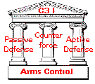
Space Based Laser [SBL]
The potential to intercept and destroy a missile over enemy territory soon after launch, rather than over friendly territory, makes the development of a boost phase intercept (BPI) capability very desirable. In concert with ground based theater missile defense (TMD) systems already under development, the U.S. continues to investigate BPI concepts for BMD systems.The SBL program could develop the technology to provide the U.S. with an advanced BMD system for both theater and national missile defense. BMDO believes that an SBL system has the potential to make other contributions to U.S. security and world security as a whole, such as inducing potential aggressors to abandon ballistic missile programs by rendering them useless. Failing that, BMDO believes that the creation of such a universal defense system would provide the impetus for other nations to expand their security agreements with the United States, bringing them under a U. S. sponsored missile defense umbrella.
An SBL platform would achieve missile interception by focusing and maintaining a high powered laser on a target until it achieves catastrophic destruction. Energy for the sustained laser burst is generated by the chemical reaction of the hydrogen fluoride (HF) molecule. The HF molecules are created in an excited state from which the subsequent optical energy is drawn by an optical resonator surrounding the gain generator.
Lasers have been studied for their usefulness in air defense since 1973, when the Mid Infrared Advanced Chemical Laser (MIRACL) was first tested against tactical missiles and drone aircraft. Work on such systems continued through the 1980s, with the Airborne Laser Laboratory, which completed the first test laser intercepts above the earth. Initial work on laser based defense systems was overseen by the Defense Advanced Research Projects Agency (DARPA), but transferred to the newly created Strategic Defense Initiative Organization (SDIO) in 1984. Work continues today under the auspices of the BMDO, the successor to the SDIO.
The SBL program builds on a broad variety of technologies developed by the SDIO in the 1980s. The work on the Large Optics Demonstration Experiment (LODE), completed in 1987, provided the means to control the beams of large, high powered lasers. The Large Advanced Mirror Program (LAMP) designed and built a 4 meter diameter space designed mirror with the required optical figure and surface quality. In 1991, the Alpha laser (2.8 mm) developed by the SDIO achieved megawatt power at the requisite operating level in a low pressure environment similar to space. Numerous Acquisition, Tracking, and Pointing/ Fire Control (ATP/ FC) experiments both completed and currently underway will provide the SBL platform with stable aimpoints. Successes in the field of ATP include advances in inertial reference, vibration isolation, and rapid retargeting/ precision pointing (R2P2). In 1995 the Space Pointing Integrated Controls Experiment offered near weapons level results during testing.
Most recently, the Alpha LAMP Integration (ALI) program has performed integrated high energy ground testing of the laser and beam expander to demonstrate the critical system elements. The next step is an integrated space vehicle ground test with a space demonstration to conclusively prove the feasibility of deploying an operational SBL system.
Future plans include orbiting the SBL Readiness Demonstrator (SBLRD) in order to test all of the systems together in their intended working environment. Designs for the SBLRD satellite call for four major subsystems: the ATP system; providing acquisition, tracking, targeting, stabilization, and assessment capabilities; the laser device, providing the optical power, and beam quality, as well as maintains nozzle efficiency; the optics and beam control systems, enhancing and focus the beam, augmenting the capabilities of the laser device; and the space systems, providing a stable platform, storage of the reactants, and furnish electrical power (but do not power the laser).
The SBLRD is intended to demonstrate the capability to perform boost phase Theater Missile Defense from space. The objectives of the space demonstration include gaining performance information critical to the development of an operational SBL system, as well as gain a general understanding of operating such a system.
BMDO and the Air Force agreed to transfer the execution of the SBLRD project and the related SBL technology developments to the Air Force. BMDO retained overarching SBL architecture responsibilities.
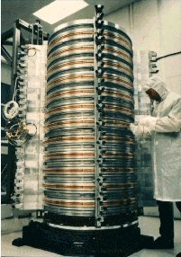
Large Advanced Mirror Program (LAMP) 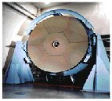
To demonstrate the ability to fabricate the large mirror required by an SBL, the Large Advanced Mirror Program (LAMP) built a lightweight, segmented 4 m diameter mirror on which testing was completed in 1989. Tests verified that the surface optical figure and quality desired were achieved, and that the mirror was controlled to the required tolerances by adaptive optics adjustments. This mirror consists of a 17 mm thick facesheet bonded to fine figure actuators that are mounted on a graphite epoxy supported reaction structure. To this day, this is the largest mirror completed for use in space. This LAMP segmented design is applicable to 10 m class mirrors, and the Large Optical Segment (LOS) program has since produced a mirror segment sized for an 11 m mirror. The large dimension of this LOS mirror segment approximates the diameter of the LAMP mirror
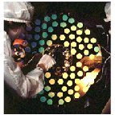
The ability to control a beam was demonstrated at low power under the Large Optics Demonstration Experiment (LODE) in 1987. The current high power beam control technology is now being integrated with the Alpha laser and the LAMP mirror in a high power ground demonstration of the entire high energy laser weapon element. This is known as the Alpha-LAMP Integration (ALI) program.
Acquisition, Tracking, Pointing (ATP) 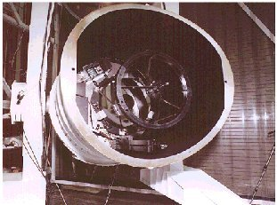
The ATP technologies required (sensors, optics, processors, etc.) have been validated through a series of component and integrated testing programs over the last decade. In 1985, the Talon Gold brassboard operated sub-scale versions of all the elements needed in the operational ATP system including separate pointing and tracking apertures, an illuminator, an inertial reference gyro system, fire control mode logic, sensors and trackers. Talon Gold achieved performance levels equivalent to that needed for the SBL. In 1991, the space-borne Relay Mirror Experiment (RME), relayed a low-power laser beam from a ground site to low-earth orbit and back down to a scoring target board at another location with greater pointing accuracy and beam stability than needed by SBL. The technology to point and control the large space structures of the SBL was validated in 1993 by the Rapid Retargeting and Precision Pointing (R2P2) program that used a hardware test bed to develop and test the large and small angle spacecraft slewing control laws and algorithms. The Space Pointing Integrated Controls Experiment (SPICE) demonstrated in 1995 near weapon scale disturbance isolation of 60-80 db and a pointing jitter reduction of 75:1. In 1998, the Phillips-Laboratory-executed High Altitude Balloon Experiment, (HABE) will demonstrate autonomous end-to-end operation of the key ATP-Fire Control (FC) functions in a realistic timeline against actual thrusting ballistic missiles. HABE will use a visible low-power marker beam as a surrogate to the megawatt HF beam and measure beam pointing accuracy, jitter and drift against a fixed aimpoint on the target.
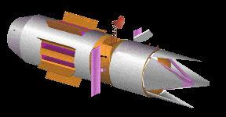 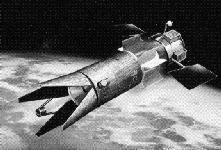 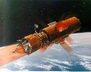 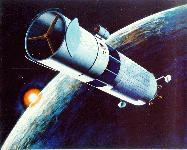 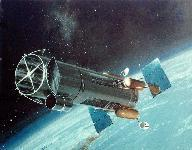 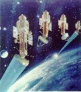 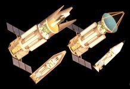 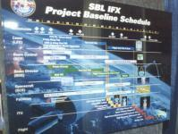 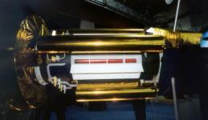 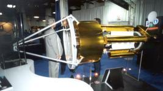 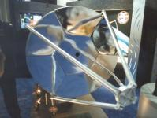 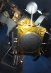 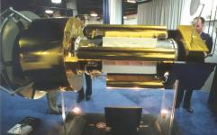 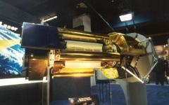 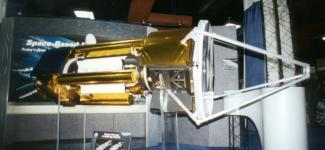
Current SBL planning is based on a 20 satellite constellation, operating at a 40° inclination, intended to provide the optimum TMD threat negation capability. At this degree of deployment, kill times per missile will range from 1 to 10 seconds, depending on the range from the missile. Retargeting times are calculated at as low as 0.5 seconds for new targets requiring small angle changes. It is estimated that a constellation consisting of only 12 satellites can negate 94% of all missile threats in most theater threat scenarios. Thus a system consisting of 20 satellites is expected by BMDO to provide nearly full threat negation.
SBLRD Characteristics
Weight: 17,500 kg Length: 20.12 m
Diameter: 4.57 m Mirror Diameter: 4.0 m
- Hydrogen fluoride chemical energy powered laser.
- On board surveillance capabilities.
- Super reflective mirror coatings allowing for uncooled optics.
- Concurrent NMD / TMD capability.
Resources
- Space-Based Laser Project Office - AF SMC
- LASERS IN SPACE TECHNOLOGICAL OPTIONS FOR ENHANCING US MILITARY CAPABILITIES by Mark E. Rogers, Lieutenant Colonel, USAF November 1997 Occasional Paper No. 2 Center for Strategy and Technology Air War College Maxwell Air Force Base, Alabama
- Lasers and Missile Defense: New Concepts for Space-based and Ground-based Laser Weapons, William H. Possel, Lt Col, USAF -- CSAT Occasional Paper No. 5 Center for Strategy and Technology Air War College, July 1998
- Laser Options for National Missile Defense Steven G. Leonard; Mark L. Devirgilio (Faculty Advisor) Air Command and Staff College 1998 - The Space Based Laser (SBL) can meet the NMD requirements. A 24 SBL satellite constellation can kill 20 Taepo Dong 2 missiles launched anywhere in the world at anytime. Each SBL satellite is projected by BMDO to weigh 17,500 kilograms. Using the Aerospace Corporation’s historical cost verses weight information, which shows that satellites average cost is roughly $50,000 per pound, the first satellite in this constellation would approach $2 billion dollars.
- SPACE BASED LASER INTEGRATED FLIGHT EXPERIMENT The U.S. Air Force contracted with an industry joint venture on February 08, 1999 for the Space Based Laser Integrated Flight Experiment (SBL IFX). The award constitutes the first increment of a Cost Plus Award Fee/Cost Plus Fixed Fee contract valued at approximately $2-3 billion once completed.
- Space Based Laser Readiness Demonstrator Acquisition Approach Space and Missile Systems Center Advanced Systems Directorate -- 01 September 1998
- MEMORANDUM FOR ALL POTENTIAL OFFERORS 10 Jul 98
- Draft Request for Proposal 10 Jul 98
- STATEMENT OF OBJECTIVES DRAFT - 10 Jul 98
- SBL Glossary of Terms 10 July 1998
- INFORMATION PROTECTION GUIDE [DRAFT] 10 July 1998
- SECURITY GUIDANCE 10 July 1998
- Interest in "Other than Prime" for the SBLRD Contract(17 Jun 98)
- DRAFT STATEMENT OF OBJECTIVES 9 June 1998
- Interim Request for Proposal Release 15 Jun 98
- Teaming within Space Based Laser (SBL) Project Competition 9 Feb 98
- STATEMENT OF OBJECTIVES (23 Jan 98)
- DRAFT TECHNICAL REQUIREMENTS DOCUMENT (TRD) 23 January 1998
- Answers to Questions Submitted at Industry Day- 26 Aug 97 (11 Sep 97)
- SBL Technologies Request for Information 11 Sep 97
- SBL Technologies Request for Information 11 Aug 1997
- SBL Technologies Request for Information 29 July 1997
Hi-res 200 dpi images [~400k JPEGs]
Continue to next page.
| Top | homepage | Why Indeed | Billiard Balls |
|
|
|